重复进行就给出
重复进行就给出5．从四元数到向量
格拉斯曼的工作暂时仍被忽视，但正如我们已指出的，四元数几乎立刻就吸引了很大的注意力，然而它们完全不是物理学家所要的东西。他们要寻找一个概念，它不脱离笛卡儿坐标，而是比四元数更紧密地联系于笛卡儿坐标。在这样一种概念的方向上，第一步是麦克斯韦（1831—1879）做的，他是电磁理论的发现者，最伟大的数学物理学家之一，是剑桥大学的物理教授。
麦克斯韦知道哈密顿的工作；他虽然听到过格拉斯曼的工作，但未看到过。他区分出哈密顿的四元数的数量部分和向量部分，并且把重点放在这些分开来的概念上(14)。然而，在他的有名的《论电和磁》（A Treatise on Electricity and Magnetism，1873）中，他对四元数作了较大的让步，并且更多地谈到四元数的数量部分和向量部分，虽然他是把这些部分作为分开的实体处理的。他说（p．10），要规定一个向量需用三个量（分量），这三个量能解释成沿三个坐标轴的长度。这个向量概念是哈密顿的四元数的向量部分，麦克斯韦就是这样说的。哈密顿曾引入x，y和z的向量函数v，其分量为v1，v2和v3，并对它应用算子
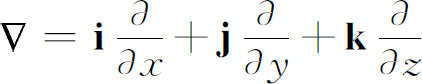
而得到结果（6）。这样，v是一个四元数。但麦克斯韦把数量部分和向量部分分开，并用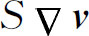
（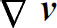
的数量部分）和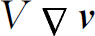
（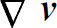
的向量部分）表示。他称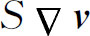
的聚度，因为这个表达式在流体动力学中出现过多次，并且当v是速度时它有通量的意义，或每单位时间内通过包围一点的一块小面积的每单位体积所含的纯流量。他又称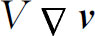
的旋转或旋度，因为这个表达式在流体动力学中也已出现过，它是流体在一点的旋转率的两倍，克利福德（William Kingdom Clifford）后来称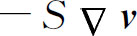
为散度。然后麦克斯韦指出，算子重复进行就给出
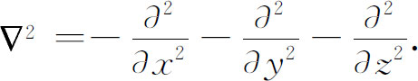
他称这算子为拉普拉斯算子。他允许这算子作用于数量函数以产生一个数量，作用于向量函数产生一个向量(15)。
麦克斯韦在他1871年的文章中说明了一个数量函数的梯度的旋度和向量函数的旋度的散度永远是零。他还说，一个向量函数v的旋度的旋度是v的散度的梯度减去v的拉普拉斯算子（这仅在直角坐标中成立）。
麦克斯韦经常用四元数作为基本的数学实体，或至少经常提到四元数，也许是为了帮助他的读者。然而他的工作清楚地表明，向量是物理思想的真正的工具，而不像某些人所主张的那样，仅仅是书写的缩减方案。于是在麦克斯韦所处的时代，由于分开处理四元数的数量部分和向量部分，而创造了大量的向量分析。
一个新的独立的课题，三维向量分析的开创，以及同四元数的正式分裂，在19世纪80年代初期由吉布斯（Josiah Willard Gibbs）和亥维赛所独立建立。吉布斯（1839—1903）是耶鲁学院的数学物理教授，最初是物理化学家，曾在他的学生中私人传播过小册子（1881年和1884年）《向量分析基础》（Elements of Vector Analysis）(16)。在介绍性的说明中叙述了他的观点：
下述分析的一些基本原理都是在稍微不同的形式下为四元数的学生们所熟悉的。建立这一课题的方法与处理四元数的方法有些不同，只是给出一个适当的记法来表达向量之间或向量与数量之间的那些关系，这个记法看来是非常重要的，它非常容易地引导到解析变换，并阐明一些这样的变换。作为不同于四元数处理的先例可以引用克利福德的《静力学》（Kinematics）。在这方面还应提到格拉斯曼这个名字，下述方法与他的系统的联系，在某些方面要比与哈密顿系统的联系更紧密。
吉布斯关于向量分析的小册子虽然是为私人交流而印刷的，但却变成广为知道的书。这个材料最后被编进了威尔逊（E．B．Wilson）所写的书中，他根据于吉布斯的讲义。这本书，吉布斯和威尔逊的《向量分析》（Vector Analysis），出现于1901年。
亥维赛（1850—1925）早期的科学经历是电报和电话工程师。他在1874年隐退到乡村生活，专心于写作，主要是写电学和磁学的课题。亥维赛曾从哈密顿的《基础》学过四元数，但受阻于很多特殊的定理。他感到学习四元数对一个忙碌的工程师是太难了，因此他建立他的向量分析，对他来说，这不过是通常笛卡儿坐标的速记形式。19世纪80年代，他在杂志《电学家》（Electrician）上写的文章中自由地运用了这个向量分析。后来在他的三卷著作《电磁理论》（Electromagnetic Theory，1893，1899，1912）的第一卷中给出向量代数的很多内容。第三章约175页专门用于向量方法。他对这个课题的发展结果本质上与吉布斯的相融合，虽然他不喜欢吉布斯的记法，而采取了他自己的记法，这根据于泰特的四元数的记法。
按照吉布斯和亥维赛所提出的，一个向量不过是四元数的向量部分，但独立于任何四元数。这样，向量v是
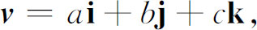
这里，i，j，k分别是沿x，y，z轴的单位向量，系数a，b和c是实数，称为分量。两个向量是相等的，如果相应的分量都相等。两个向量的和是一个向量，其各分量分别是被加项的相应分量之和。
引进了两种类型的乘法，两者都对物理有用。第一种类型称为数量乘法，是这样定义的：把v和
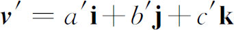
像通常的多项式一样相乘，用“点”作为乘法的符号，令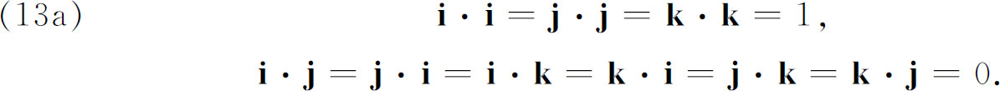
这样，
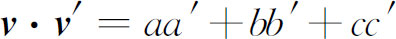
．这个乘积不再是向量而是一个实数或数量，称为数量积。它具有新的代数特点，因为两个实数或复数或四元数的积，永远是我们所从出发的同一类数。数量积的另一奇怪性质是当两个因子没有一个是零时它可以是零。例如向量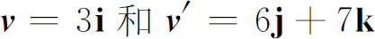
的积就是零。两个向量的数量积在代数上新奇的还有另一方面———它不允许逆过程。就是说，永远不能找到一个向量或数量q使
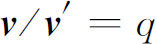
。比如说，假如q是一个向量，q·v′就会是一个数量，因而不等于向量v。另一方面，假如q是一个数量，则虽然qv是定义成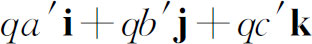
，却很少有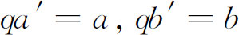
及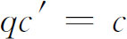
，这里a，b和c是v的系数。尽管缺乏商，数量积仍是有用的。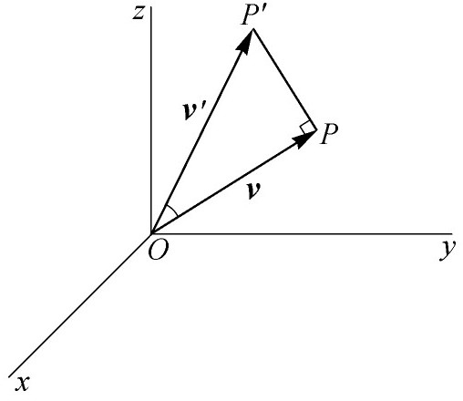
图32.2
数量积的物理意义直接显示如下：设v′是一个力（图32.2），它的方向和大小用由O到P′的线段表示，则这个力推动O点的物体在一个方向（比如说在OP方向）上的效应（这里OP代表向量v），是OP′在OP上的投影或OP′cosø，这里ø是OP′和OP间的夹角。当OP是单位长度时，OP′的投影正好是乘积v·v′的值。
向量的第二类型的乘积，称为向量积，定义如下：我们仍像多项式一样将v和v′相乘，但这时令
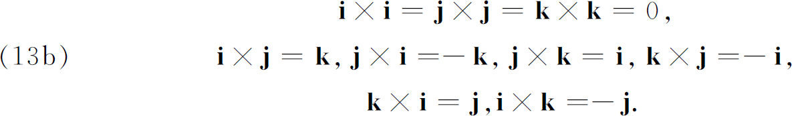
于是这乘积，用v×v′表示，便是
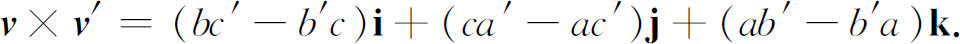
两个向量的向量积是一个向量，不难证明它的方向是垂直于v和v′的方向，且指向是当v通过较小的角度转到v′时右手螺旋所指的方向。两个平行向量的向量积是零，虽然没有一个因子是零。此外，这乘积像四元数乘积一样不可交换。进一步，它甚至不是结合的，例如，i×j×j可以表示（i×j）×j＝k×j＝-i或i× （j×j）＝i×0＝0。
向量乘法没有逆，因为如果v用v′除的商是一个向量q，我们就必然会有
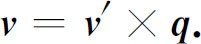
而无论q是什么，这都需要v′垂直于v，但这可能不是出发时的情况。假如q是一个数量，那么偶然才会有
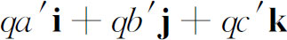
等于v。像数量积一样，向量积是由物理情况提出的。设图32.3中的OP和PP′是v和v′的长度和方向。设v′是一个力，它的大小和方向同PP′的一样，力v′绕O的力矩的量度是v×v′的长度，其方向通常取v×v′的方向。
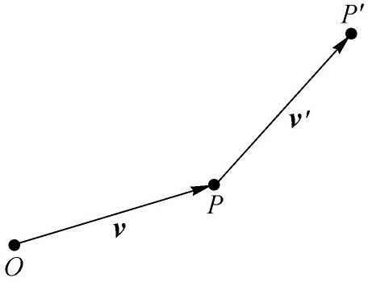
图32.3
向量代数被推广到变向量和向量微积分。例如，变向量
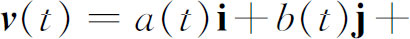
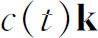
是一个向量函数，这里a（t），b（t）和c（t）都是t的函数。由t的不同值得到的各向量，如果都以O作为原点画出来（图32.4），则这些向量的终点描出一条曲线。因此数量变量t的向量函数所起的作用类似于通常的函数，比如说，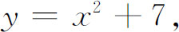
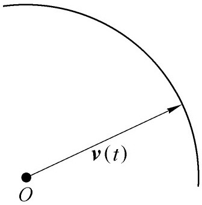
图32.4
对这些向量函数建立的向量微积分完全和通常函数的一样。
梯度u的概念
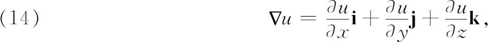
这里u是x，y和z的一个数量函数，向量函数v的散度为
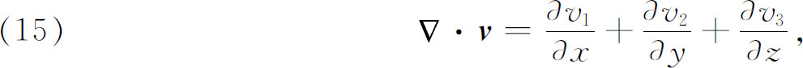
这里v1，v2和v3是v的分量。v的旋度为
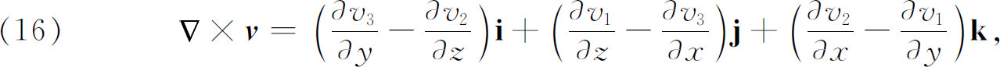
都从四元数抽象出来。
分析的很多基本定理能用向量形式表示。例如在求解热的偏微分方程的过程中，奥斯特罗格拉茨基(17)利用了体积分到曲面积分的下列转换：
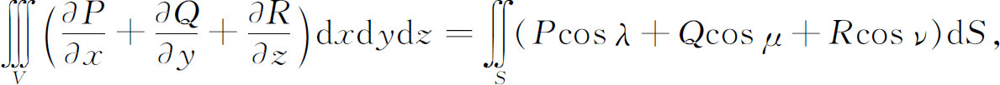
这里P，Q，R都是x，y和z的函数，并且都是一个向量的分量，而λ，μ和ν是曲面S的法线的方向余弦，S′是在左边积分中的立体V的边界。这个定理称为散度定理（也称高斯定理和奥斯特罗格拉茨基定理），它能表示成向量形式：设F是向量，它的分量是P，Q，R，而n是S的法线方向，则
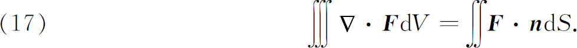
同斯托克斯的定理（它是1854年(18)剑桥大学作为史密斯奖的一次考试的题目，由他首先叙述）一样，用数量形式表述为
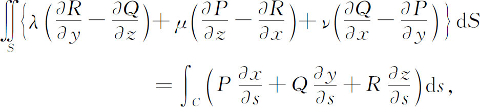
这里S是曲面的任一部分，C是S的边界曲线，而x（s），y（s）和z（s）是C的参数表示式。用向量形式，斯托克斯定理可写成
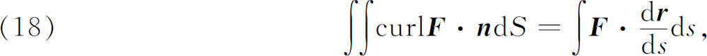
这里 是向量，它的分量是x（s），y（s）和z（s）。
是向量，它的分量是x（s），y（s）和z（s）。
当麦克斯韦写出电磁学的一些表达式和方程，特别是现在以他命名的方程时，他常常把grad u，div v和curl v中涉及的向量的分量写出来。然而亥维赛把麦克斯韦方程写成向量形式［第28章（52）］。
的确，向量和向量函数的演算通常是依靠笛卡儿分量来做的，但特别重要的是还要用向量作为单独的实体来思考，用梯度、散度和旋度来思考。这些都有直接的物理意义，更不必说有如下的事实，复杂的技术步骤能直接用向量来实现，如像人们把
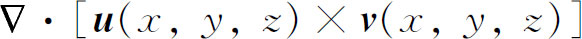
换成它的等价的式子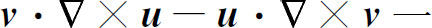
一样。还有，梯度、散度和旋度的积分已被定义，这些定义使这些概念与任何坐标定义无关。这样，代替（14）我们有，例如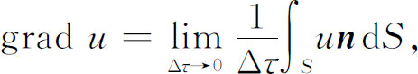
这里S是体积元Δτ的边界，而n是S的曲面元dS的法线。
正当向量分析创立的时候及其后，在四元数的拥护者和向量的拥护者之间对究竟哪一个更为有用的问题有很多争论。四元数主义者迷信四元数的价值，而向量分析的提倡者同样是派性的人。一方在泰特这些四元数的领头的支持者们之下结成联盟，另一方是结盟于吉布斯和亥维赛之下。关于争论，亥维赛讽刺地评论说，对四元数的处理，四元数是最好的工具。而泰特则描述亥维赛的向量分析为“组合了格拉斯曼和哈密顿的记法的一种阴阳怪物”。吉布斯的书在促进向量的产生方面证明有不可估量的价值。
这争论最后以有利于向量而解决了。工程师欢迎吉布斯和亥维赛的向量分析，虽然数学家们不是这样。20世纪开始时，物理学家也完全信服向量分析是他们所要的东西。有关这课题的教科书立刻在所有国家出现，而且现在是标准化的了。最后，数学家们也跟着适应了，并把向量方法引进到分析和解析几何中来。
应当指出物理学对促进创立这样的数学对象，如四元数、格拉斯曼超复数和向量的影响，这些创造变成数学的一部分，但它们的意义远远超出这些新课题的添加。这几种量的引进揭开了新的数学前景———不是只有一个实数和复数的代数，而是有很多个不相同的代数。